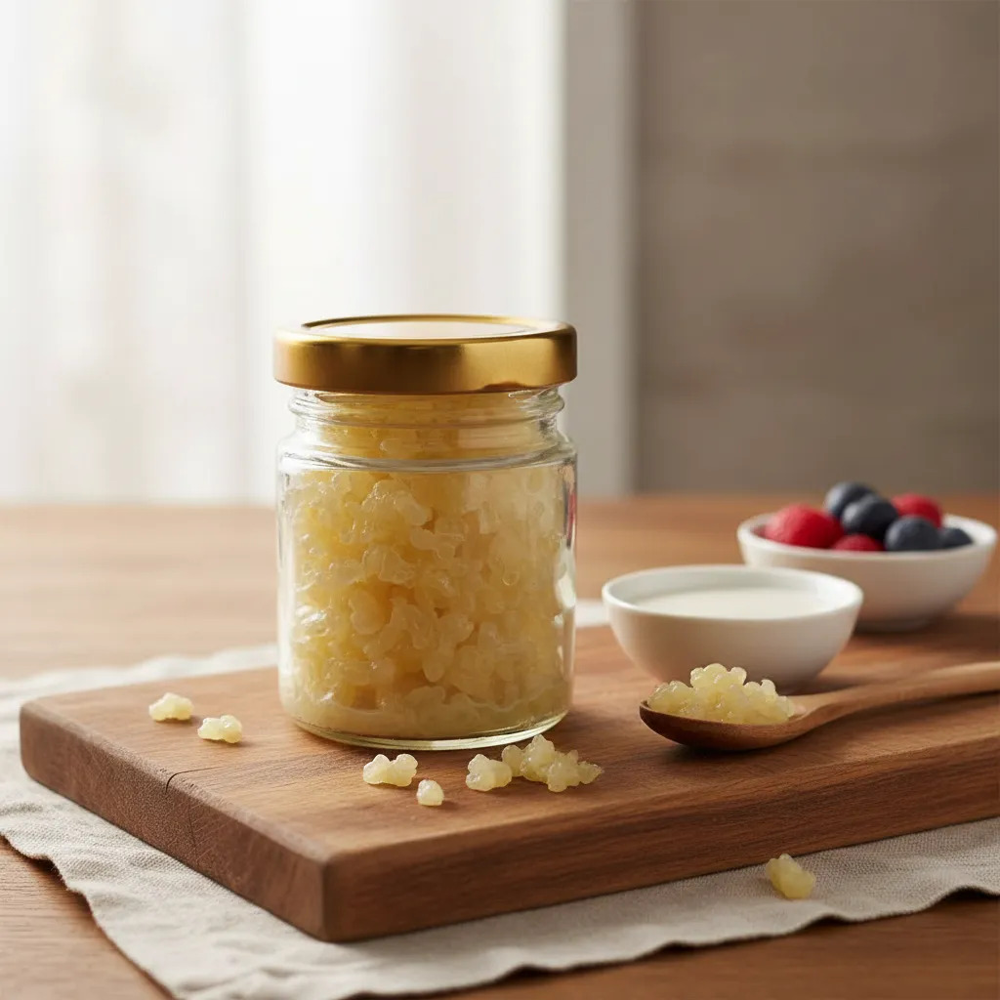
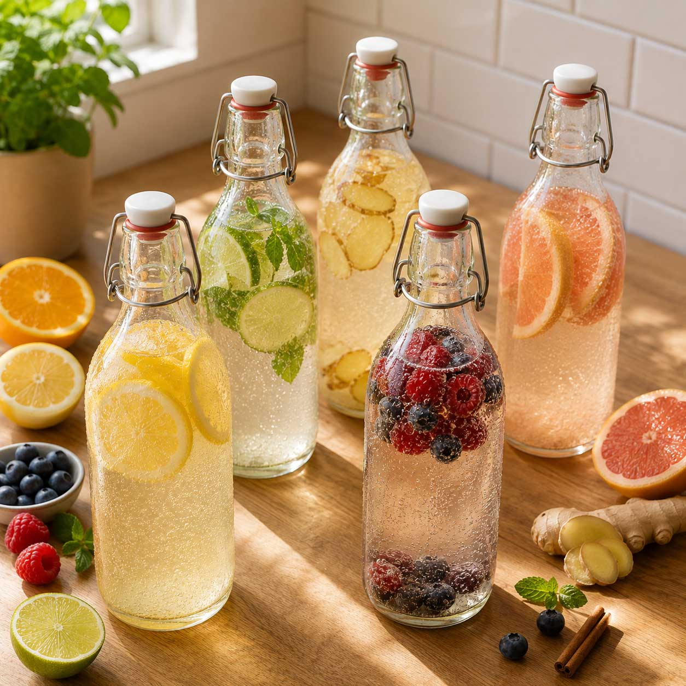
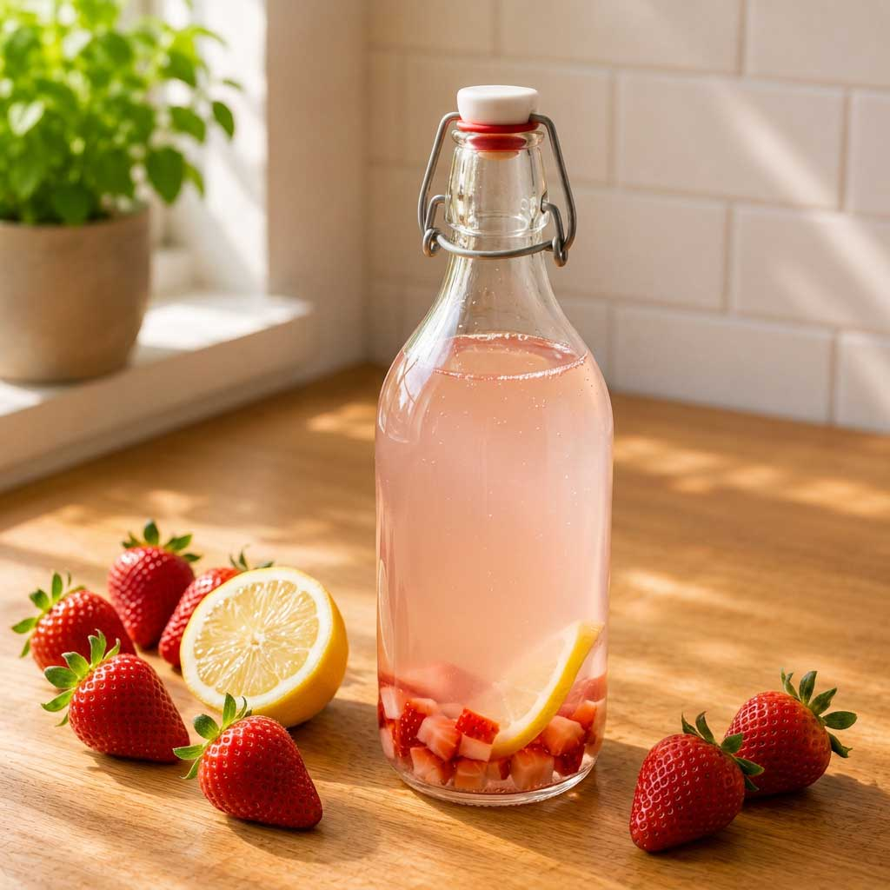
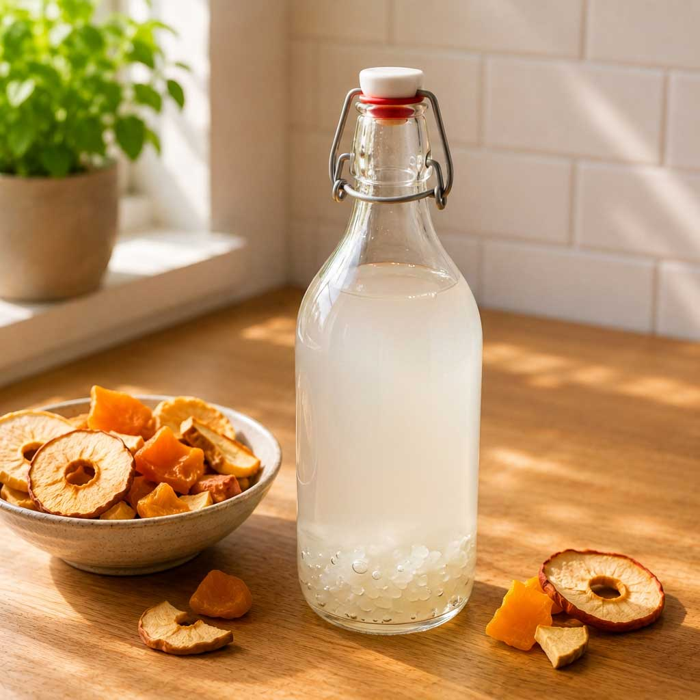

Tíbicos vivos
Cultivo fresco de tíbicos · 100 g
$25.000 COP
 TÍBIKA
TÍBIKA
Tíbicos de agua para preparar kéfir fresco, ligero y bueno para tu salud.
Conoce nuestros productos
Agua, azúcar o fruta y tus tíbicos.
Fermenta entre 24 y 48 horas.
Cuela, saboriza y sirve frío.

Cultivo fresco de tíbicos · 100 g
$25.000 COP

Bebida de kéfir de agua fermentada en fresa
$30.000 COP

Bebida de kéfir de agua fermentada en coco
$30.000 COP